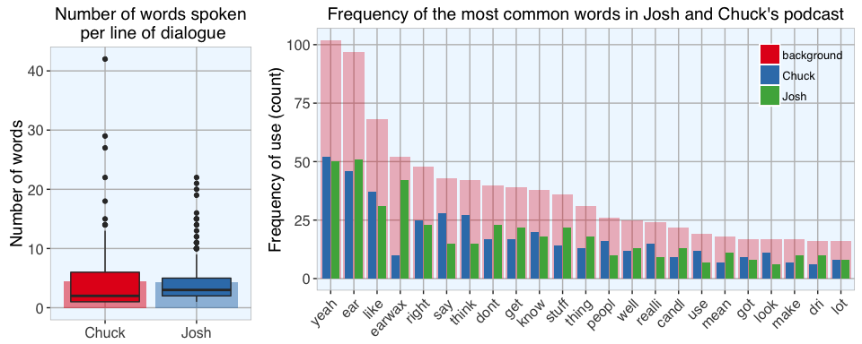
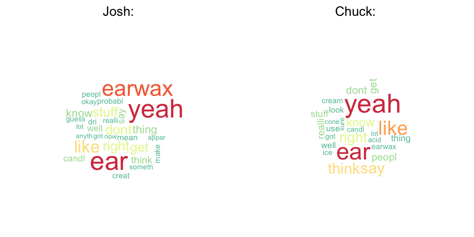
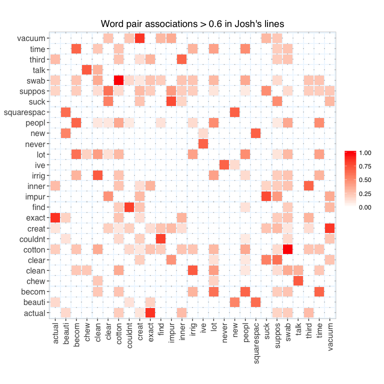
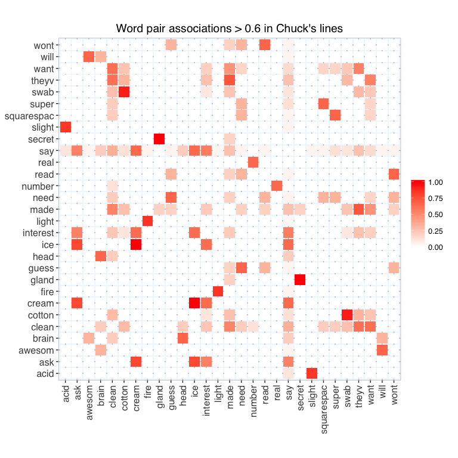
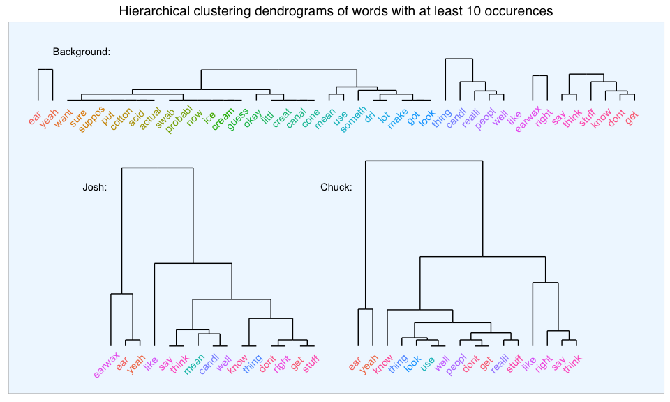
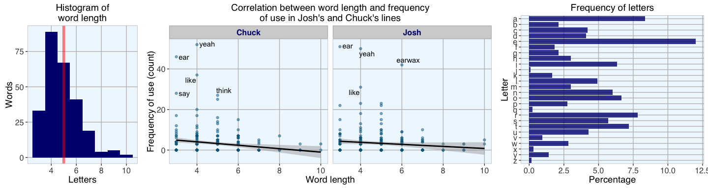

Text mining and sentiment analysis of a Stuff You Should Know Podcast
Stuff You Should Know (or SYSK) is one of the many great podcasts from How Stuff Works. The two SYSK hosts Josh and Chuck have taught me so many fascinating things over the years, and today I want to use one of their podcasts to learn a little bit about text analysis in R.
Initially, I wanted to explore all SYSK podcasts. Unfortunately however, I could only find a transcript for the episode Earwax: Live With It, posted on March 19, 2015.
The complete R code can be found at the end of this post or as an R-Markdown on Github.
The podcast transcript
I copied the episode transcript from its web page and saved it as a tab delimited text file. The file can be downloaded from Github.
Separating Josh and Chuck
Of course, I wouldn’t actually want to separate Josh and Chuck. But for comparison’s sake in this analysis, I am creating two separate files for lines of dialogue spoken by either Josh or Chuck. I am also keeping the combination of both for background information.
How emotional are Josh and Chuck?
Sentiment analysis
The first thing I want to explore is a sentiment analysis of the lines spoken by Josh and Chuck. Sentiment analysis categorizes text data into positive and negative sentiments and gives information about the emotional state or attitude of the speaker or the contents of a text.
I am using the package syuzhet for sentiment analysis.
NRC sentiments
Saif Mohammad’s NRC Emotion Lexicon is a collection of words that were manually categorized based on their association with the emotions anger, anticipation, disgust, fear, joy, sadness, surprise, and trust, and with positive and negative sentiments.
What sentiment did the podcast have?
Before I go ahead with the sentiment analysis I want to get an idea of the podcast’s words’ association with the NRC categories.

As can be seen by the words and their associated emotions/ sentiments, sentiment analysis is not perfect. Most words make a lot of intuitive sense with their category (e.g. gross, fungus and spider in disgust), but a few I find to be really strange (like, why would waffle be associated with anger?). Still, the majority of categorisations make sense, so let’s go ahead with the sentiment analysis.
Does the podcast’s sentiment change over time?
Sentiment analysis for each line of dialogue produces a matrix with one column per sentiment/ emotion and one row per line. If any of the words in a line of dialogue could be associated with a given category, this category would get a value of 1 in the matrix. If there was no association with a category, its value would be 0. The lines of dialogue are sorted according to the original input text, in this case this means that they represent the order in which they were spoken in the podcast. Because the plot would get too big with all categories, I split the data into positive and negative sentiments and emotions.
For analysing positive and negative sentiments, syuzhet implements four different methods, each of which uses a slightly different scale. But all of them assign negative values to indicate negative sentiment and positive values to indicate positive sentiments.
All of the methods rely on a precomputed lexicon of word-sentiment score associations. The emotional or sentiment valence is then computed based on the scores of the words from each line of dialogue.

The upper two plots show on the x-axis the progression of dialogue over time with each point being a line of dialogue. The sentiment score on the y-axis shows the intensity of the sentiment or emotions in the respective line of dialogue, i.e. the more words in a line were associated with the given category, the higher the line’s sentiment score.
From a first glance at these emotions and sentiments, it seems to me that the podcast is more positive than negative but we can get a better overview of positive and negative sentiments by scoring only positive and negative sentiments.
In the third graph we can see quite well that the trend goes towards positive scores, meaning the podcast is overall upbeat. While there are different peaks in both positive and negative directions in Chuck’s and Josh’s lines, there is no overall bias for one being more positive (or negative) than the other.
Finally, I am looking at the sentiment percentage values to get an idea about the percentage of positive versus negative scores along the podcast’s trajectory. Here, the podcast was divided into 20 bins and the mean sentiment valence calculated for each. This last plot shows a clear trend of increasing positivity towards the end of the podcast in Chuck’s lines. Josh on the other hand doesn’t change very much over the progression of the podcast. Interesting…
Quantitative text analysis
Building a corpus
In text analysis, a corpus refers to a collection of documents. Here, I am using the tm package to create my corpus from the character vectors of Josh’s and Chuck’s lines. SnowballC is used for word stemming.
Before I can analyse the text data meaningfully, however, I have to do some pre-processing:
-
Removing punctuation
Here, I am removing all punctuation marks. Before I do that, I will transform all hyphens to a space, because the text includes some words which are connected by hyphens and would otherwise be connected if I simply removed the hyphen with the removePunctuation function.
-
Transforming to lower case
R character string processing is case-sensitive, so everything will be converted to lower case.
-
Stripping numbers
Numbers are usually not very meaningful for text analysis (if we are not specifically interested in dates, for example), so they are removed as well.
-
Removing stopwords
Stopwords are collections of very common words which by themselves don’t tell us very much about the content of a text (e.g. and, but, the, however, etc.). The tm package includes a list of stopwords for the English language.
-
Stripping whitespace
I’m also removing superfluous whitespace around words.
-
Stemming
Finally, I’m stemming the words in the corpus. This means that words with a common root are shortened to this root. Even though stemming algorithms are not perfect, they allow us to compare conjugated words from the same origin.
Creating the Document Term Matrix
The document term matrix (DTM) lists the number of occurrences of each word per document in the corpus. Here, each document in the corpus represents one line of dialogue from the original transcript.
By restricting the DTM to words with a minimum number of letters and an occurrence in at least a minimum number of lines of dialogue (cutoff), we exclude less specific terms.
Is “Yeah” Josh and Chucks favorite word?
Most frequent words
By summing up the occurrences of each word over all documents we get the word count frequencies.
When accounting for stem words and the cutoff I set for the DTM to evaluate, Josh and Chuck spoke roughly the same number of words (Josh: 880, Chuck: 865) and had almost the same number of dialogue lines (Josh: 202, Chuck: 193). So, good job on neither one dominating the discussion. ;-)

The lefthand plot shows the number of words spoken per line of dialogue. The background barplot shows the mean number of words spoken per line, the boxplot shows all individual data points (each point represents one line of dialogue and its corresponding word count). While the total number of words and of dialogue lines were basically the same, Chuck’s lines had a stronger deviation around the median with few very long lines. Josh on the other hand seems to have spoken lines with a more consistent length.
The righthand plot shows the most common words and how often they were used overall (red) and by Josh and Chuck separately (green and blue). The most frequent words include (not surprisingly) “ear” and “earwax”, but funnily also “yeah”. To be honest, while listening to the podcast I never noticed yeah being said exceptionally often but I guess the data doesn’t lie…

Wordclouds are another way to visualize the frequency of words. The frequency is indicated both by the size of the words (bigger words are more frequent than smaller words) and their color.
Word association
Associations among words bigger than 60% were plotted in a heatmap to find words that most often co-occured in the same line of dialogue.

Among the most conspicuous associations were cotton and swab in Josh’s lines (this was probably a hyphenated word to begin with: cotton-swab) and between secret and gland in Chuck’s line (probably secretory gland).
Hierarchical clustering
Hierarchical clustering can be used to classify words by sorting them into clusters according to similarity of occurence (i.e. their frequency or count).

We already knew that the words “earwax”, “ear” and “yeah” were the most common, so they were clustered accordingly.
Knowledge for the masses
Shorter words are more frequent than longer words

Most words have 4 or 5 letters, only a handful are longer than 7 letters. We don’t have words with fewer than 3 letters because they were excluded in the beginning when obtaining the DTM.
As we can see above, there is only a very small correlation between the length of words and how often they are used. As expected from what we intuitively know, the most common words tend to be shorter while long words are used only occasionally because they are often more specific terms. And there is no real difference between Josh or Chuck when it comes to the length (and complexity?) of the words they use. In general the words they use are rather on the short site, which makes sense as a big part of what makes their podcast so great is that they convey information in a down-to-earth, understandable way.
The frequency plot of all the letters in the alphabet shows that vocals are more common than consonants.

The plot above shows how often each letter occurs at which position in a word in all the words used by Josh and Chuck. For example, the letter j occured only once and at position one (so 100% of js are at this position). The other letters are more equally distributed but according to the fact that fewer words were longer than 6 letters, there are fewer letters at positions 7 to 10.
Conclusion
This little excursion into text analysis gave an interesting different look at a podcast one would normally “evaluate” intuitively while listening. This hard cold look through the data lens can highlight aspects that probably would be overlooked otherwise; for example, I never noticed that Josh and Chuck used the word yeah that much!
It would be very interesting to broaden the analysis to more podcasts to see if the yeah-thing was just a fluke of this episode or whether it’s a recurrent thing, maybe by trying speech-to-text-conversion tools.
R code
# setting my custom theme of choice
library(ggplot2)
library(ggrepel)
my_theme <- function(base_size = 12, base_family = "sans"){
theme_grey(base_size = base_size, base_family = base_family) +
theme(
axis.text = element_text(size = 12),
axis.text.x = element_text(angle = 90, vjust = 0.5, hjust = 1),
axis.title = element_text(size = 14),
panel.grid.major = element_line(color = "grey"),
panel.grid.minor = element_blank(),
panel.background = element_rect(fill = "aliceblue"),
strip.background = element_rect(fill = "lightgrey", color = "grey", size = 1),
strip.text = element_text(face = "bold", size = 12, color = "navy"),
legend.position = "bottom",
legend.background = element_blank(),
panel.margin = unit(.5, "lines"),
panel.border = element_rect(color = "grey", fill = NA, size = 0.5)
)
}
# reading lines of transcript
raw <- readLines("sysk_earwax.transcript.txt")
head(raw)
## [1] "Josh: Hey, and welcome to the podcast. I'm Josh Clark. There is Charles W. \"Chuck\" Bryant, there is Jeri. Yeah, it's Stuff You Should Know."
## [2] ""
## [3] "Chuck: He just shrugged."
## [4] ""
## [5] "Josh: Yeah, like \"eh, what are we going to do? That's what we are.\""
## [6] ""
# extracting lines beginning with Josh:/ Chuck: from transcript by looping over the names
names <- c("Josh", "Chuck")
for (name in names){
# grep lines from Josh or Chuck
assign(paste("lines", name, sep = "_"), as.character(raw[grep(paste0("^", name, ":"), raw)]))
}
# and removing the beginning of each line that indicates who's speaking
lines_Josh <- gsub("^Josh: ", "", lines_Josh)
lines_Chuck <- gsub("^Chuck: ", "", lines_Chuck)
# Combining Josh's and Chuck's lines
lines_bg <- c(lines_Josh, lines_Chuck)
names <- c("Josh", "Chuck", "bg")
# get NRC sentiments for
# a) each line of dialogue and
# b) each word spoken in the podcast
library(syuzhet)
for (name in names){
assign(paste("get_nrc_sentiment", name, sep = "_"), data.frame(line_number = 1:length(get(paste("lines", name, sep = "_"))),
get_nrc_sentiment(get(paste("lines", name, sep = "_")))))
get_tokens <- get_tokens(get(paste("lines", name, sep = "_")))
assign(paste("get_nrc_sentiments_tokens", name, sep = "_"), data.frame(word = get_tokens,
get_nrc_sentiment(get_tokens)))
}
# gather word sentiments for plotting
library(tidyr)
get_nrc_sentiments_tokens_bg_gather <- get_nrc_sentiments_tokens_bg %>%
gather(word, sentiment, anger:positive)
colnames(get_nrc_sentiments_tokens_bg_gather)[2:3] <- c("sentiment", "value")
get_nrc_sentiments_tokens_bg_gather$name <- "bg"
get_nrc_sentiments_tokens_bg_gather <- get_nrc_sentiments_tokens_bg_gather[which(get_nrc_sentiments_tokens_bg_gather$value != 0), ]
get_nrc_sentiments_tokens_bg_gather <- get_nrc_sentiments_tokens_bg_gather[!duplicated(get_nrc_sentiments_tokens_bg_gather$word), ]
ggplot(data = get_nrc_sentiments_tokens_bg_gather, aes(x = value, y = value, color = word, label = word)) +
geom_line(size = 1) +
facet_wrap(~ sentiment, ncol = 2) +
my_theme() +
theme(
axis.text = element_blank(),
axis.ticks = element_blank(),
axis.title = element_blank(),
legend.position = "none",
panel.grid.major = element_blank()) +
geom_text_repel(segment.color = "aliceblue", segment.alpha = 0) +
labs(title = "Sentiment categories of words used in podcast")
get_nrc_sentiment_Josh_gather <- get_nrc_sentiment_Josh %>%
gather(line_number, sentiment, anger:positive)
colnames(get_nrc_sentiment_Josh_gather)[2:3] <- c("sentiment", "value")
get_nrc_sentiment_Josh_gather$name <- "Josh"
get_nrc_sentiment_Chuck_gather <- get_nrc_sentiment_Chuck %>%
gather(line_number, sentiment, anger:positive)
colnames(get_nrc_sentiment_Chuck_gather)[2:3] <- c("sentiment", "value")
get_nrc_sentiment_Chuck_gather$name <- "Chuck"
get_nrc_sentiment_gather <- rbind(get_nrc_sentiment_Josh_gather, get_nrc_sentiment_Chuck_gather)
# split into positive and negative emotions/ sentiments
get_nrc_sentiment_gather_pos <- get_nrc_sentiment_gather[which(get_nrc_sentiment_gather$sentiment %in%
c("anticipation", "joy", "positive", "surprise", "trust")), ]
get_nrc_sentiment_gather_neg <- get_nrc_sentiment_gather[which(get_nrc_sentiment_gather$sentiment %in%
c("anger", "disgust", "fear", "negative", "sadness")), ]
library(RColorBrewer)
p1 <- ggplot(data = get_nrc_sentiment_gather_pos, aes(x = line_number, y = value)) +
geom_line(size = 1, color = brewer.pal(3, "Set1")[3]) +
facet_grid(name ~ sentiment) +
my_theme() +
theme(
axis.text.x = element_text(angle = 0, vjust = 0, hjust = 0.5),
legend.position = "none") +
labs(x = "Dialogue line number", y = "Sentiment valence",
title = "Sentiments during podcast progression (positive sentiments)")
p2 <- ggplot(data = get_nrc_sentiment_gather_neg, aes(x = line_number, y = value)) +
geom_line(size = 1, color = brewer.pal(3, "Set1")[1]) +
facet_grid(name ~ sentiment) +
my_theme() +
theme(
axis.text.x = element_text(angle = 0, vjust = 0, hjust = 0.5),
legend.position = "none") +
labs(x = "Dialogue line number", y = "Sentiment valence",
title = "Sentiments during podcast progression (negative sentiments)")
# get sentiment scores
for (name in names){
sentiment <- data.frame(line_number = 1:length(get(paste("lines", name, sep = "_"))),
syuzhet = get_sentiment(get(paste("lines", name, sep = "_")), method = "syuzhet"),
bing = get_sentiment(get(paste("lines", name, sep = "_")), method = "bing"),
afinn = get_sentiment(get(paste("lines", name, sep = "_")), method = "afinn"),
nrc = get_sentiment(get(paste("lines", name, sep = "_")), method = "nrc"))
assign(paste("sentiment", name, sep = "_"), sentiment)
}
# gather for plotting
sentiment_Josh_gather <- sentiment_Josh %>%
gather(line_number, analysis, syuzhet:nrc)
colnames(sentiment_Josh_gather)[2:3] <- c("algorithm", "value")
sentiment_Josh_gather$name <- "Josh"
sentiment_Chuck_gather <- sentiment_Chuck %>%
gather(line_number, analysis, syuzhet:nrc)
colnames(sentiment_Chuck_gather)[2:3] <- c("algorithm", "value")
sentiment_Chuck_gather$name <- "Chuck"
sentiment_gather <- rbind(sentiment_Josh_gather, sentiment_Chuck_gather)
p3 <- ggplot(data = sentiment_gather, aes(x = line_number, y = value, color = algorithm)) +
geom_hline(aes(yintercept=0), linetype="dashed", size = 1) +
geom_line(size = 1) +
facet_grid(name ~ algorithm) +
my_theme() +
theme(
axis.text.x = element_text(angle = 0, vjust = 0, hjust = 0.5),
legend.position = "none") +
labs(x = "Dialogue line number", y = "Sentiment valence",
title = "Sentiment during podcast progression according to different lexicons")
# get sentiment percent values
for (name in names){
sentiment_percent_vals <- data.frame(bin = 1:20,
syuzhet = get_percentage_values(get_sentiment(get(paste("lines", name, sep = "_")), method = "syuzhet"), bins = 20),
bing = get_percentage_values(get_sentiment(get(paste("lines", name, sep = "_")), method = "bing"), bins = 20),
afinn = get_percentage_values(get_sentiment(get(paste("lines", name, sep = "_")), method = "afinn"), bins = 20),
nrc = get_percentage_values(get_sentiment(get(paste("lines", name, sep = "_")), method = "nrc"), bins = 20))
assign(paste("sentiment_percent_vals", name, sep = "_"), sentiment_percent_vals)
}
# gather for plotting
sentiment_percent_vals_Josh_gather <- sentiment_percent_vals_Josh %>%
gather(bin, analysis, syuzhet:nrc)
colnames(sentiment_percent_vals_Josh_gather)[2:3] <- c("algorithm", "value")
sentiment_percent_vals_Josh_gather$name <- "Josh"
sentiment_percent_vals_Chuck_gather <- sentiment_percent_vals_Chuck %>%
gather(bin, analysis, syuzhet:nrc)
colnames(sentiment_percent_vals_Chuck_gather)[2:3] <- c("algorithm", "value")
sentiment_percent_vals_Chuck_gather$name <- "Chuck"
sentiment_percent_vals_gather <- rbind(sentiment_percent_vals_Josh_gather, sentiment_percent_vals_Chuck_gather)
p4 <- ggplot(data = sentiment_percent_vals_gather, aes(x = bin, y = value, color = algorithm)) +
geom_hline(aes(yintercept=0), linetype="dashed", size = 1) +
geom_line(size = 1) +
facet_grid(name ~ algorithm) +
my_theme() +
theme(
axis.text.x = element_text(angle = 0, vjust = 0, hjust = 0.5),
legend.position = "none") +
labs(x = "Bin", y = "Sentiment percent values",
title = "Sentiment percent values during podcast progression")
library(gridExtra)
library(grid)
grid.arrange(p1, p2, p3, p4, ncol = 1)
library(tm)
data("crude")
library(SnowballC)
transform_to_space <- content_transformer(function(x, pattern) gsub(pattern, " ", x))
for (name in names){
corpus <- Corpus(VectorSource(get(paste("lines", name, sep = "_"))))
# Removing punctuation
corpus <- tm_map(corpus, transform_to_space, "-")
corpus <- tm_map(corpus, removePunctuation)
# Transforming to lower case
corpus <- tm_map(corpus, content_transformer(tolower))
# Stripping numbers
corpus <- tm_map(corpus, removeNumbers)
# Removing stopwords
corpus <- tm_map(corpus, removeWords, stopwords("english"))
# Stripping whitespace
corpus <- tm_map(corpus, stripWhitespace)
# Stemming
corpus <- tm_map(corpus, stemDocument)
# Converting said to say because this isn't included in stemDocument
corpus <- tm_map(corpus, gsub, pattern = "said", replacement = "say")
# There are a couple of words not included among the stopwords that I would like to remove
myStopwords <- c("one", "two", "three", "just", "your", "that", "can")
corpus <- tm_map(corpus, removeWords, myStopwords)
# Assigning to object and treat as text document
assign(paste("corpus", name, sep = "_"), tm_map(corpus, PlainTextDocument))
}
corpus_Josh
## <<VCorpus>>
## Metadata: corpus specific: 0, document level (indexed): 0
## Content: documents: 227
corpus_Chuck
## <<VCorpus>>
## Metadata: corpus specific: 0, document level (indexed): 0
## Content: documents: 226
corpus_bg
## <<VCorpus>>
## Metadata: corpus specific: 0, document level (indexed): 0
## Content: documents: 453
# but here I will keep them all to make the numbers comparable to background later
for (name in names){
assign(paste("dtm", name, sep = "_"), DocumentTermMatrix(get(paste("corpus", name, sep = "_")),
control = list(wordLengths = c(3, 100), bounds = list(global = c(3, length(get(paste("lines", name, sep = "_"))))))))
}
dtm_Josh
## <<DocumentTermMatrix (documents: 227, terms: 126)>>
## Non-/sparse entries: 801/27801
## Sparsity : 97%
## Maximal term length: 10
## Weighting : term frequency (tf)
dtm_Chuck
## <<DocumentTermMatrix (documents: 226, terms: 122)>>
## Non-/sparse entries: 779/26793
## Sparsity : 97%
## Maximal term length: 10
## Weighting : term frequency (tf)
dtm_bg
## <<DocumentTermMatrix (documents: 453, terms: 260)>>
## Non-/sparse entries: 1945/115835
## Sparsity : 98%
## Maximal term length: 10
## Weighting : term frequency (tf)
# get word frequencies from DTM
for (name in names){
assign(paste("freq_dtm", name, sep = "_"), colSums(as.matrix(get(paste("dtm", name, sep = "_")))))
}
# find most frequent terms and strongest associations with "ear"
for (name in names){
print(findFreqTerms(get(paste("dtm", name, sep = "_")), lowfreq=40))
print(findAssocs(get(paste("dtm", name, sep = "_")), "ear", 0.4))
}
## [1] "ear" "earwax" "yeah"
## $ear
## canal candl
## 0.44 0.44
##
## [1] "ear" "yeah"
## $ear
## canal want clean
## 0.54 0.44 0.42
##
## [1] "dont" "ear" "earwax" "like" "right" "say" "think" "yeah"
## $ear
## canal candl
## 0.49 0.42
length(freq_dtm_Josh)
## [1] 126
length(freq_dtm_Chuck)
## [1] 122
length(freq_dtm_bg)
## [1] 260
# get number of words per line
for (name in names){
words_per_doc <- data.frame(wordcount = rowSums(as.matrix(get(paste("dtm", name, sep = "_")))))
words_per_doc$name <- rep(name, nrow(words_per_doc))
assign(paste("words_per_doc", name, sep = "_"), words_per_doc)
}
words_per_doc <- rbind(words_per_doc_Josh, words_per_doc_Chuck)
words_per_doc <- words_per_doc[which(words_per_doc$wordcount > 0), ]
word_count <- data.frame(name = c(names[-3]),
number_all_words = c(sum(words_per_doc[which(words_per_doc$name == "Josh"), 1]),
sum(words_per_doc[which(words_per_doc$name == "Chuck"), 1])),
number_lines = c(nrow(words_per_doc[which(words_per_doc$name == "Josh"), ]),
nrow(words_per_doc[which(words_per_doc$name == "Chuck"), ])))
word_count$words_per_line <- word_count$number_all_words/word_count$number_lines
word_count
## name number_all_words number_lines words_per_line
## 1 Josh 880 202 4.356436
## 2 Chuck 865 193 4.481865
p1 <- ggplot(words_per_doc, aes(x = name, y = wordcount, fill = name)) +
geom_bar(data = word_count, aes(x = name, y = words_per_line, fill = name), stat = "identity", alpha = .5) +
geom_boxplot() +
scale_fill_brewer(palette = "Set1", name = "") +
my_theme() +
theme(axis.title.x = element_blank(),
axis.text.x = element_text(angle = 0, vjust = 0, hjust = 0.5),
legend.position = "none") +
labs(y = "Number of words",
title = "Number of words spoken\n per line of dialogue")
# create merged data frame for plotting
library(dplyr)
freq_df_Josh <- data.frame(words = names(freq_dtm_Josh), freq = freq_dtm_Josh)
freq_df_Chuck <- data.frame(words = names(freq_dtm_Chuck), freq = freq_dtm_Chuck)
freq_df <- full_join(freq_df_Josh, freq_df_Chuck, by = "words")
freq_df_bg <- data.frame(words = names(freq_dtm_bg), freq = freq_dtm_bg)
freq_df <- full_join(freq_df, freq_df_bg, by = "words")
freq_df[is.na(freq_df)] <- 0
colnames(freq_df)[2:4] <- names
colnames(freq_df)[4] <- "background"
# subsetting only those words which occur at least 15 times in either Josh's, Chuck's or their combined lines
freq_df_subs <- freq_df[apply(freq_df[, -1], 1, function(x) any(x > 15)), ]
# gather for plotting
freq_df_subs_gather <- freq_df_subs %>%
gather(words, count)
colnames(freq_df_subs_gather)[2] <- "name"
# setting factor levels
f = as.factor(freq_df_bg[order(freq_df_bg$freq, decreasing = TRUE), "words"])
freq_df_subs_gather <- within(freq_df_subs_gather, words <- factor(words, levels = f))
p2 <- ggplot(freq_df_subs_gather, aes(x = words, y = count, fill = name)) +
geom_bar(data = subset(freq_df_subs_gather, name == "background"), alpha = .3, stat = "identity") +
geom_bar(data = subset(freq_df_subs_gather, name != "background"), stat = "identity", position = position_dodge(width = .8), width = .7) +
scale_fill_brewer(palette = "Set1", name = "") +
my_theme() +
theme(axis.title.x = element_blank(),
axis.text.x = element_text(angle = 45, vjust = 1, hjust = 1),
legend.position = c(.9, .85)) +
labs(y = "Frequency of use (count)",
title = "Frequency of the most common words in Josh and Chuck's podcast")
grid.arrange(p1, p2, widths = c(0.3, 0.7), ncol = 2)
library(wordcloud)
#setting the same seed makes the look consistent
set.seed(42)
layout(matrix(c(1, 2, 3, 4), nrow = 2, byrow = TRUE), heights = c(0.1, 1))
par(mar=rep(0, 4))
plot.new()
text(x=0.5, y=0.5, "Josh:", cex = 2)
plot.new()
text(x=0.5, y=0.5, "Chuck:", cex = 2)
wordcloud(names(freq_dtm_Josh), freq_dtm_Josh, min.freq = 8, colors = rev(brewer.pal(8, "Spectral")))
wordcloud(names(freq_dtm_Chuck), freq_dtm_Chuck, min.freq = 8, colors = rev(brewer.pal(8, "Spectral")))
library(dplyr)
for (name in names){
for (i in 1:length(names(get(paste("freq_dtm", name, sep = "_"))))){
associations <- as.data.frame(findAssocs(get(paste("dtm", name, sep = "_")), names(get(paste("freq_dtm", name, sep = "_")))[i], 0))
associations$word <- rownames(associations)
if (i == 1){
associations_table <- associations[, c(2, 1)]
} else {
associations_table <- full_join(associations_table, associations, by = "word")
}
if (i == length(names(get(paste("freq_dtm", name, sep = "_"))))){
associations_table[is.na(associations_table)] <- 0
assign(paste("associations_table", name, sep = "_"), associations_table)
}
}
}
library(reshape2)
cor = 0.6
for (name in names){
top_words <- get(paste("associations_table", name, sep = "_"))
top_words <- top_words[apply(top_words[, -1], 1, function(x) any(x > cor)), c(TRUE, apply(top_words[, -1], 2, function(x) any(x > cor)))]
associations_table_melt <- melt(top_words)
p <- ggplot(data = associations_table_melt, aes(x = word, y = variable, fill = value)) +
geom_tile(width=.9, height=.9) +
scale_fill_gradient2(low = "white", high = "red",
limit = c(0,1), space = "Lab",
name="") +
my_theme() +
theme(
axis.title = element_blank(),
legend.position = "right") +
coord_fixed() +
labs(title = paste0("Word pair associations > ", cor, " in ", name, "'s lines"))
print(p)
}
library(ggdendro)
for (name in names){
#convert dtm to matrix
m <- as.matrix(subset(get(paste("freq_df", name, sep = "_")), freq > 10))
d <- dist(m, method = "maximum")
hc <- hclust(d, method = "average")
assign(paste("hc", name, sep = "_"), dendro_data(as.dendrogram(hc)))
}
ggplot() +
ylim(-5, 50) +
geom_segment(data = segment(hc_bg), aes(x = x, y = y+40, xend = xend, yend = yend+40)) +
geom_segment(data = segment(hc_Josh), aes(x = x+5, y = y, xend = xend+5, yend = yend)) +
geom_segment(data = segment(hc_Chuck), aes(x = x+22, y = y, xend = xend+22, yend = yend)) +
geom_text(data = label(hc_bg), aes(x = x, y = y+37, label = label, color = label), angle = 45, lineheight = 0, vjust = 0, hjust = 0.6) +
geom_text(data = label(hc_Josh), aes(x = x+5, y = y-3, label = label, color = label), angle = 45, lineheight = 0, vjust = 0, hjust = 0.6) +
geom_text(data = label(hc_Chuck), aes(x = x+22, y = y-3, label = label, color = label), angle = 45, lineheight = 0, vjust = 0, hjust = 0.6) +
ggplot2::annotate("text", x = 4, y = 48, label = "Background:") +
ggplot2::annotate("text", x = 4.9, y = 26, label = "Josh:") +
ggplot2::annotate("text", x = 21.5, y = 26, label = "Chuck:") +
my_theme() +
theme(
axis.text = element_blank(),
axis.ticks = element_blank(),
axis.title = element_blank(),
legend.position = "none",
panel.grid.major = element_blank()) +
labs(title = "Hierarchical clustering dendrograms of words with at least 10 occurences")
freq_df$characters <- nchar(freq_df$words)
p1 <- ggplot(data = freq_df, aes(x = characters)) +
geom_histogram(binwidth = 1, fill = "navy") +
geom_vline(xintercept = round(mean(freq_df$characters), digits = 0),
color = "red", size = 2, alpha = .5) +
labs(x = "Letters", y = "Words",
title = "Histogram of\nword length") +
my_theme() +
theme(axis.text.x = element_text(angle = 0, vjust = 0, hjust = 0.5))
freq_df_gather <- freq_df %>%
gather(words, count, Josh:background)
colnames(freq_df_gather)[3] <- "name"
p2 <- ggplot(subset(freq_df_gather, name != "background"), aes(x = characters, y = count, label = words)) +
geom_point(color = "deepskyblue4", alpha = 0.5) +
my_theme() +
geom_smooth(method = "lm", se = TRUE, size = 1, color = "black") +
facet_grid(~ name) +
theme(axis.text.x = element_text(angle = 0, vjust = 0, hjust = 0.5)) +
labs(x = "Frequency of use (count)", y = "Word length",
title = "Correlation between word length and frequency\nof use in Josh's and Chuck's lines") +
geom_text_repel(data = subset(freq_df_gather, name != "background" & count > 25))
library(stringr)
letters <- unlist(sapply(freq_df$words, function(x) str_split(x, "")))
library(qdap)
letters_tab <- dist_tab(letters)
# setting factor levels
f = as.factor(rev(letters_tab$interval))
letters_tab <- within(letters_tab, interval <- factor(interval, levels = f))
p3 <- ggplot(letters_tab, aes(x = interval, y = percent)) +
geom_bar(stat = "identity", fill = "navy", alpha = 0.8) +
coord_flip() +
my_theme() +
theme(axis.text.x = element_text(angle = 0, vjust = 0, hjust = 0.5)) +
labs(x = "Letter", y = "Percentage",
title = "Frequency of letters")
grid.arrange(p1, p2, p3, widths = c(0.2, 0.5, 0.3), ncol = 3)
letters_df <- as.data.frame(letters)
letters_df$position <- as.factor(unlist(regmatches(rownames(letters_df), gregexpr("[0-9]+", rownames(letters_df)))))
letters_df_table <- as.data.frame(table(letters_df))
total_number_letter <- as.data.frame(table(letters_df$letters))
letters_df_table <- left_join(letters_df_table, total_number_letter, by = c("letters" = "Var1"))
letters_df_table$percent <- letters_df_table$Freq.x*100/letters_df_table$Freq.y
letters_df_table$percent[letters_df_table$percent == 0] <- Inf
letters_df_table$Freq.x[letters_df_table$Freq.x == 0] <- Inf
letters_df_table_gather <- letters_df_table[, -4] %>%
gather(letters, position, Freq.x:percent)
colnames(letters_df_table_gather)[3:4] <- c("measure", "value")
letters_df_table_gather$measure <- ifelse(letters_df_table_gather$measure == "Freq.x", "Count", "Percent")
# setting factor levels
f = as.factor(rev(1:10))
letters_df_table_gather <- within(letters_df_table_gather, position <- factor(position, levels = f))
ggplot(data = subset(letters_df_table_gather, !is.infinite(value)), aes(x = letters, y = position, fill = value)) +
geom_tile(width=.9, height=.9) +
facet_grid(measure ~ .) +
scale_fill_gradient(low = "moccasin", high = "red") +
coord_flip() +
my_theme() +
theme(
axis.text.x = element_text(angle = 0, vjust = 0, hjust = 0.5),
legend.position = "right") +
coord_fixed() +
labs(x = "", y = "Position",
title = "How often does each letter occur\nat which position in a word?")
sessionInfo()
## R version 3.3.2 (2016-10-31)
## Platform: x86_64-apple-darwin13.4.0 (64-bit)
## Running under: macOS Sierra 10.12
##
## locale:
## [1] de_DE.UTF-8/de_DE.UTF-8/de_DE.UTF-8/C/de_DE.UTF-8/de_DE.UTF-8
##
## attached base packages:
## [1] grid stats graphics grDevices utils datasets methods
## [8] base
##
## other attached packages:
## [1] qdap_2.2.5 qdapTools_1.3.1 qdapRegex_0.6.0
## [4] qdapDictionaries_1.0.6 stringr_1.1.0 ggdendro_0.1-20
## [7] reshape2_1.4.2 wordcloud_2.5 dplyr_0.5.0
## [10] SnowballC_0.5.1 tm_0.6-2 NLP_0.1-9
## [13] gridExtra_2.2.1 RColorBrewer_1.1-2 tidyr_0.6.0
## [16] syuzhet_1.0.0 ggrepel_0.6.3 ggplot2_2.1.0
##
## loaded via a namespace (and not attached):
## [1] gtools_3.5.0 venneuler_1.1-0 slam_0.1-37
## [4] rJava_0.9-8 reports_0.1.4 colorspace_1.2-7
## [7] htmltools_0.3.5 yaml_2.1.13 chron_2.3-47
## [10] XML_3.98-1.4 DBI_0.5-1 plyr_1.8.4
## [13] munsell_0.4.3 gtable_0.2.0 evaluate_0.10
## [16] labeling_0.3 knitr_1.14 gender_0.5.1
## [19] parallel_3.3.2 xlsxjars_0.6.1 Rcpp_0.12.7
## [22] scales_0.4.0 formatR_1.4 gdata_2.17.0
## [25] plotrix_3.6-3 xlsx_0.5.7 openNLPdata_1.5.3-2
## [28] digest_0.6.10 stringi_1.1.2 tools_3.3.2
## [31] bitops_1.0-6 magrittr_1.5 lazyeval_0.2.0
## [34] RCurl_1.95-4.8 tibble_1.2 MASS_7.3-45
## [37] data.table_1.9.6 assertthat_0.1 rmarkdown_1.1
## [40] openNLP_0.2-6 R6_2.2.0 igraph_1.0.1